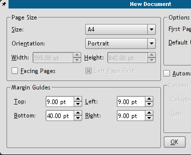
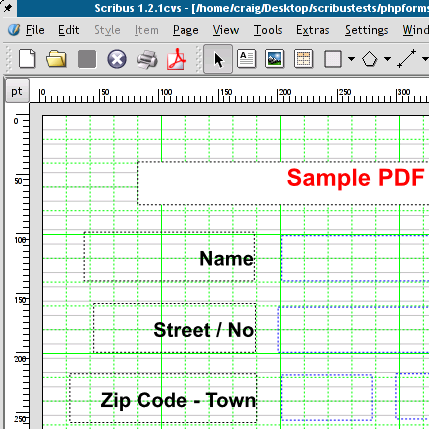
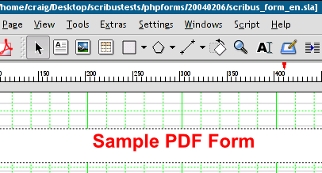
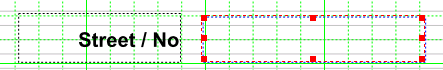
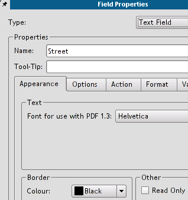
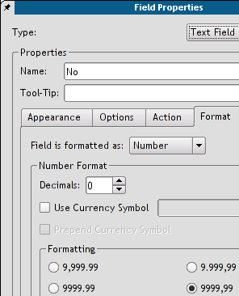
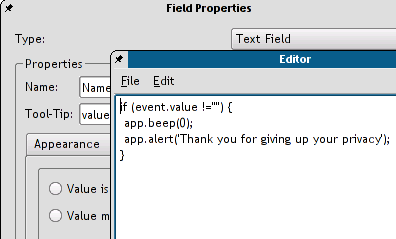
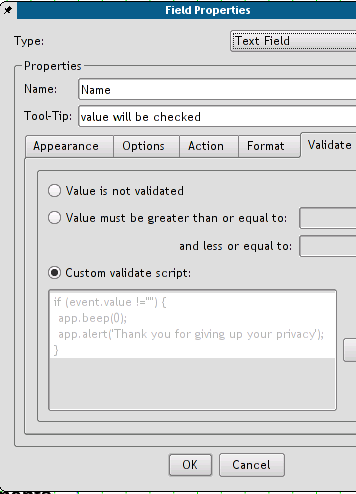
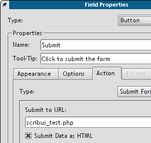
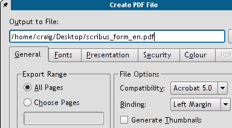

With many thanks to Maciej Hanski, who kindly translated this from the Polish original, licenced under the FDL.
The sample files, scribusformphp.tar.gz, a tarball of a php file and a sample doc, are available from http://docs.scribus.net
One of the biggest advantages of Scribus is the possibility to create PDF forms with embedded JavaScript scripts (in Adobe's own version, as described in the Adobe JavaScript Reference at http://partners.adobe.com/asn/developer/pdfs/tn/5186AcroJS.pdf
Its rather simple to create a new form with Scribus. We start with clicking on the "New Document" icon or choosing New from the File menu.
|  |
Let us activate the grid then (menu View -> Show Grid), it will help us to correctly locate our form fields on the page. We need some text frames to make a nice title and field descriptions - a few clicks on the [ab] icon and all the text frames are there in no time.
|  |
Having filled our frames with text, we can change their properties with the Properties palette, which can be found in the Tools menu.
|
|  |
The current active element of the form has a red frame border; you can activate an element in choosing the "Select" icon (the one with crossed arrows) and clicking on the item to be chosen.
|  |
The right click on an element activates a new menu. We choose Field Properties and define field names (we will need the field names in our PHP script, to which we'll send the form), types (e.g., number, time, date), and actions to be performed on different events (Mouse Enter, Mouse Exit, On Blur, and so on).
|  |
Here we are defining the No field as a number. Acrobat Reader won't accept anything else as a valid entry, then.
|  |
Here, we are defining a custom validation script for the Name field - after changing the field contents there will be a beep sound and an alert will be showed (not very sophisticated, I know, but it still demonstrates the possibilities of PDF). Scribus has its own simple text editor, which enables us to save the script to a separate file. Custom scripts can be defined not only on the form field level, but as global scripts as well (Edit -> JavaScripts).
|  |
After saving the script and closing the editor, the script contents is shown in the Field Properties.
|  |
We have still to define, to which URL the form contents will be sent (there is a simple PHP script at the destination address, which will format and display the received form data). We choose in the button properties as the action type Submit form and enter the address of our PHP script: scribus_test.php. We match the Submit Data as HTML option to end with (the other option would be the FDF data, but this is a very different story) and we are done now.
|  |
The only thing else to do is to export the document to PDF: menu File -> Export... ->; Export to PDF....
We select Acrobat 5.0 as the file format and save the file.
|  |
The result of our work can be downloaded from http://docs.scribus.net and tested. In order to submit the form we must open it from within a browser, Netscape 4.* or Mozilla are the safe choices (check the Mozilla plug-ins to see, if the Acrobat Reader plug-in is enabled. If not, you have to symlink it into the Mozilla's plug-in directory. In my particular case, the Mozilla's plug-in directory is /usr/lib/mozilla-1.3/plug-in, and the plug-in to be symlinked into it is /usr/local/Acrobat5/Browsers/intellinux/nppdf.so).
My very own impression: Scribus as a tool for working with PDF forms seems to be more comfortable in use than Adobe Acrobat 5.0 (the only version, I've worked with). It's a lot easier to layout documents with Scribus, since Acrobat only allows you to edit existing documents, but not to create a new document from scratch. Scribus provides us with the full control over the final results and allows us much more freedom in changing the document's layout. More over, Scribus files can be edited even with a simple text editor, since its file format is entirely XML based.
Maciej Hanski - 22:10:2003
Some useful PDF/JavaScript Links:
Some useful CGI/PHP links: